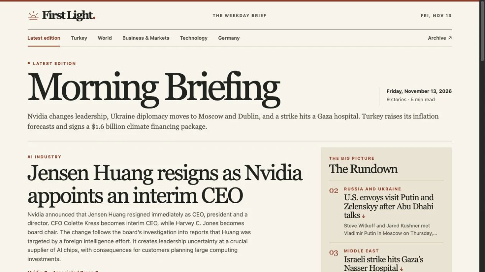
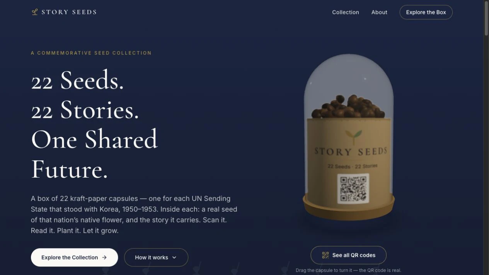

AI AUTOMATION · WEB APPLICATION
First Light
An AI-assisted, five-minute weekday news briefing. Automated research and publishing, direct source links, and a growing edition archive turn the daily news cycle into a calmer reading ritual.
SOFTWARE ENGINEER & DATA SCIENTIST
I’m Ömer. I turn complex problems into
thoughtful software, useful data, and practical AI.
01 / SELECTED WORK
A few things I’ve built.
Different challenges. The same curiosity.
Showing 4 projects.

AI AUTOMATION · WEB APPLICATION
An AI-assisted, five-minute weekday news briefing. Automated research and publishing, direct source links, and a growing edition archive turn the daily news cycle into a calmer reading ritual.
MACHINE LEARNING · DATA ENGINEERING
A collaborative fraud-detection study spanning BigQuery feature engineering, Python modeling, and Power BI. Compared logistic regression with LightGBM on highly imbalanced transaction data.

INTERACTIVE EXPERIENCE · DIGITAL STORYTELLING
Physical seed capsules become a gateway to digital history. I engineered the interactive platform for a commemorative concept honoring the Korean War’s 22 UN Sending States, and contributed to its product development.
APPLIED AI · RETRIEVAL-AUGMENTED GENERATION
A document question-answering system that connects PDF extraction, vector search, and LLM reasoning. A Streamlit interface makes contextual, document-grounded exploration approachable.
02 / THE PERSON BEHIND THE CODE
ISTANBUL, TÜRKİYEI like understanding how things work.
I like making them work better even more.
My foundation is software engineering: building full-stack systems, developing business tools, and taking ideas from a first sketch to production. At SAB Tourismo, that meant turning real operational needs into software and CRM automation.
That experience led me deeper into data. With a Software Engineering degree from Bahçeşehir University and completed Data Scientist AI and Data Analyst programs at Workintech, I bring an engineering mindset to analysis, machine learning, and AI-powered products.
I’m most interested in the space between a useful insight and a working product. That’s where I want to build.
The full story, in my CVPython · TypeScript · React · Next.js
FastAPI · Flask · MySQL · AWS
SQL · Pandas · NumPy · BigQuery
Scikit-learn · Power BI · ETL
PyTorch · LLM integrations · LangChain
Vector search · Streamlit · Automation
2026
DATA SCIENCE & AI
Data Scientist AI & Data Analyst programs
Completed intensive programs in data science, analysis, and AI. Applied Python, SQL, machine learning, data engineering, and automation through practical project work.
2023 — 2025
PROFESSIONAL EXPERIENCE
Research & Development · Full-stack Engineering
Developed and deployed full-stack systems for medical tourism operations. Worked with company leadership on business tools and CRM lifecycle automation using Python, Flask, MySQL, React, Next.js, and AWS.
2024
INTERNSHIP
Full-stack Developer Intern
Collaborated in a virtual engineering team, developing experience with Git, GitHub, version control, and APIs.
2020 — 2025
EDUCATION
Bachelor of Software Engineering
The engineering foundation behind my work across software systems, data, and applied AI.
04 / CONTINUOUS LEARNING
SIX CREDENTIALS. ONE CURIOUS MIND.960-hour program · Certificate of Completion
432-hour program · Certificate of Completion
Certificate of Competency
Course completion · Coursera
Course completion · Coursera
Course completion · Coursera
05 / LET’S CONNECT
A new opportunity, a technical challenge,
or an idea worth exploring. I’d love to hear it.